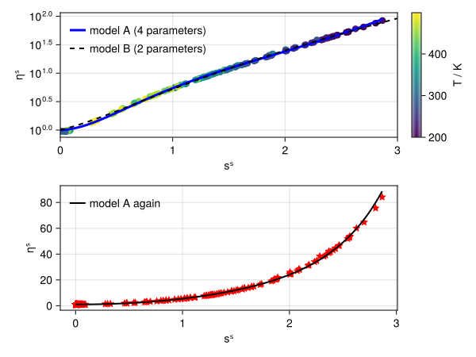

Getting Started with EntropyScaling.jl
Installation
The package can be installed by:
Pkg> add EntropyScalingPackage mode can reached by typing ] in REPL. Then, the module can be loaded by
using EntropyScalingEOS Calculations
The calculation of transport properties through entropy scaling is mostly based on fundamental EOS (defined in the Helmholtz energy $a$) as they allow the consistent calculation of all required thermodynamic properties, in particular the configurational entropy $s_{\rm conf}$. The EOS calculations are not part of this package. However, there is an extension to the Clapeyron.jl package, which provides a large number of different thermodynamic models. The extension is automatically loaded when loading both packages EntropyScaling.jl and Clapeyron.jl. Alternatively, custom thermodynamic models can be used by 'dispatching' the functions defined in the thermo.jl file to a custom EOS type.
using EntropyScaling, Clapeyron
eos_model = PCSAFT("n-butane")
model = FrameworkModel(eos_model,Dict(Viscosity() => [[0.;-14.165;13.97;-2.382;0.501;;]]))
η = viscosity(model, 37.21e6, 323.)Using EntropyScaling.jl in combination with Clapeyron.jl is the recommended way.
Units
EntropyScaling.jl can be used in combination with Unitful.jl. This enables both to obtain unitful properties directly from the models and to use data with associated units for fitting models.
- Unitful calculation of transport properties. This adds the methods:
viscosity(model, p::Pressure, T::Temperature, z=[1.]; phase=:unknown, output=default)viscosity(model, ϱ::Density, T::Temperature, z=[1.]; output=default)
::Propertyis meta code for unitful values, e.g.300u"K"forT::Temperature. The density can either be mass or molar density. Theoutputkeyword defines the unit of the calculated transport property (see here for the default values). - Defining data for fitting entropy scaling models using units. This supports constructing
TransportPropertyDatausing units, e.g.TransportPropertyData(T::Vector{Temperature}, p::Vector{Pressure}, η::Vector{Viscosity}). The property-specific constructors (ViscosityData, ...) also support units.
In the following, both cases are demonstrated:
using EntropyScaling, Unitful, Clapeyron, CoolProp
# Calculate unitful transport properties
model_CE = RefpropRESModel("methane")
thermal_conductivity(model, 1u"atm", 80u"°F")
# 0.019529950158013242 W K^-1 m^-1
# Assign units to data for fitting
(_T_exp,_ϱ_exp,_η_exp) = EntropyScaling.load_sample_data(); # Load sample data
T_exp = _T_exp .* 1u"K"
ϱ_exp = _ϱ_exp .* 1u"mol/m^3"
η_exp = _η_exp .* 1u"Pa*s"
data = TransportPropertyData(T_exp, ϱ_exp, η_exp)
eos_model = PCSAFT("butane")
model = FrameworkModel(eos_model, [data]) # Fit model parameters
η = viscosity(model, 1u"bar", 26.85u"°C", phase=:liquid, output_unit = u"cP")
# 0.16058971694885213 cPPlots
Plotting functionality is available through Plots.jl (which must be loaded). For example, this can be used for checking fitted models against scaled (experimental) reference data (see example below).
EntropyScaling.plot — Functionplot(model::AbstractEntropyScalingModel, dat::TransportPropertyData; slims=nothing,
cprop=nothing)Plots the scaled transport property as function of the entropy scaling variable (e.g. the reduced entropy). The entropy scaling model as well as the scaled transport property data are shown.
slims sets the range for the entropy scaling variable (used for the model calculation). cprop controls the property used for coloring (e.g. :T, :p, or ϱ). A general documentation for plot for controling the appearance can be found here.
Example
In the following example, entropy scaling models are fitted to quasi-experimental data (from CoolProp) and compared.
using EntropyScaling, Clapeyron, CoolProp, Plots
sub = "propane"
Ndat = 200
T, p = rand(200.:500.,Ndat), 10.0.^(rand(Ndat).*4 .+ 4) # define T-p state points
η = [PropsSI("V","T",T[i],"P",p[i],sub) for i in 1:Ndat] # calculate reference viscosity data
# Create data and model
ηdat = ViscosityData(T,p,[],η)
model_A = FrameworkModel(PCSAFT(sub), [ηdat])
model_B = FrameworkModel(PCSAFT(sub), [ηdat]; opts=FitOptions(what_fit=Dict(Viscosity() => Bool[0,1,0,1,0])))
# Test plot
plot(model, ηdat; slims=(0,3), cprop=:T, label="Model A (4 parameters fitted)")
plot!(model_B, ηdat; slims=(0,3), cprop=:T, lc=:blue, label="Model B (2 parameters fitted)")